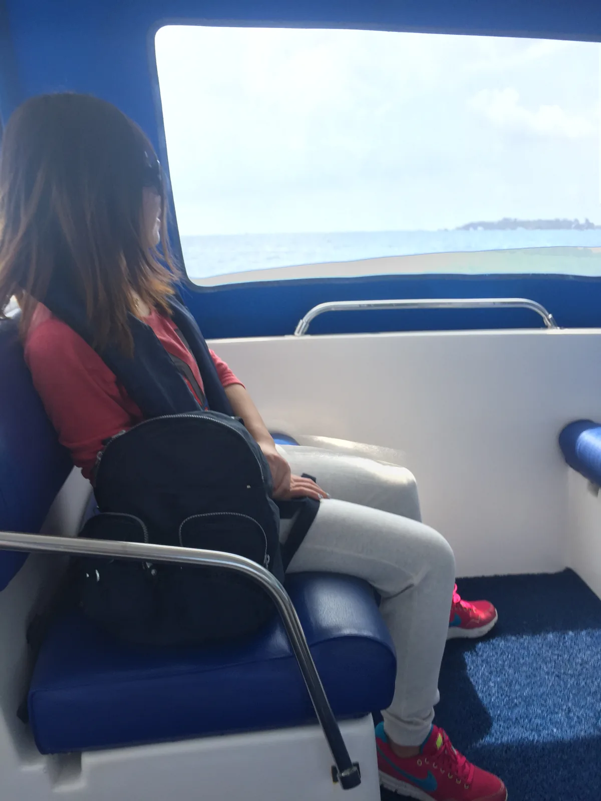
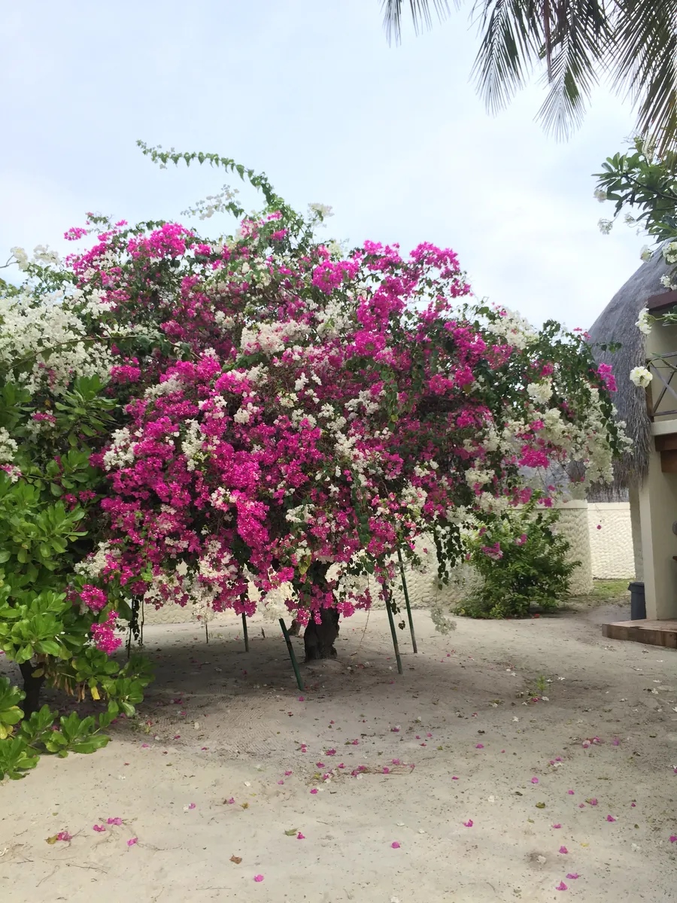
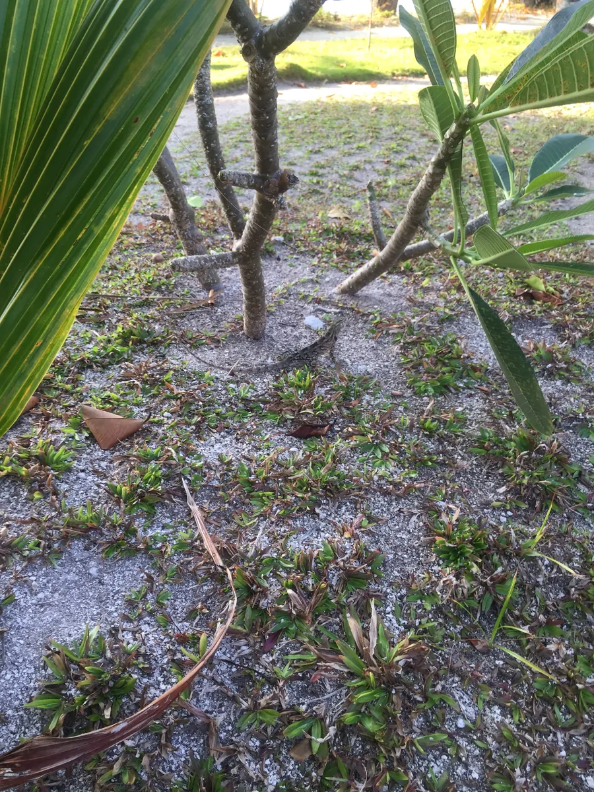
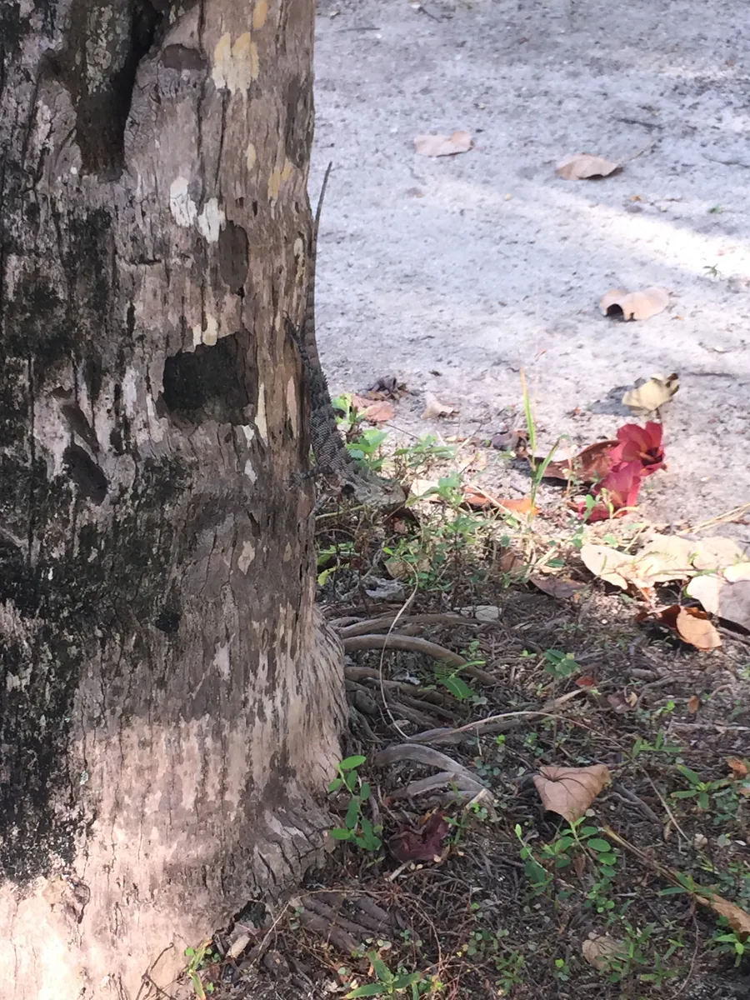
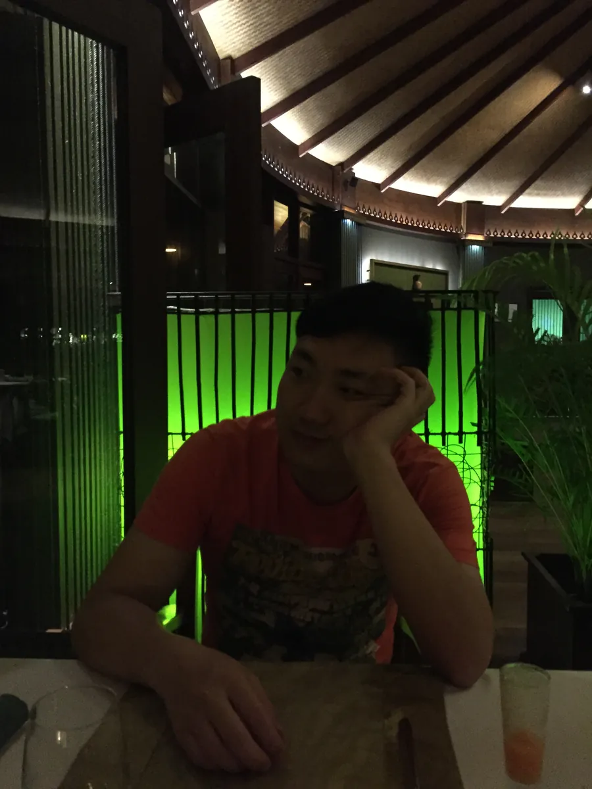

马尔代夫：一个国家把"一岛一酒店"做成了整个经济体的商业模式
Maldives — a nation that turned 'one island, one resort' into an entire economy.

2013 年去了马尔代夫。具体住的哪个岛、哪家酒店，现在已经记不清了，但有两个画面一直留在记忆里：遍布度假村的三角梅，还有专门坐船出海看野生海豚的那次经历。
三角梅几乎是热带岛屿的标配，但马尔代夫的三角梅给人的感觉不太一样——在一个几乎没有工业、国土面积小到只有几百平方公里的珊瑚礁国家，沿着度假村的甬道、庭院、栈桥两侧种得到处都是，反而成了这个国家"资源匮乏但极致精致"的一个缩影：没有山、没有河、几乎没有天然植被的纵深，那就把眼前能种活的东西种到极致，让每一寸能看见的地方都精心打理过。看海豚也是同样的逻辑——马尔代夫本身没有陆地上的观光资源，但整片印度洋和珊瑚礁生态，反而成了它最值钱的"资产"。专门包船出海看野生海豚，这种体验今天想来，本质上就是把"什么都没有"变成了"体验式旅游产品"的一次微观示范。


这个国家，把"稀缺"本身做成了商业模式
马尔代夫是一个很极端的案例：几乎没有工业，没有像样的商贸金融业，整个国民经济几乎完全押在旅游业上。旅游业长期占其 GDP 的四分之一到三成左右，占外汇收入的六成以上，直接吸纳了全国超过七成的劳动力。
支撑这套经济体系的，是马尔代夫独创的"一岛一度假村"模式——一个珊瑚礁岛，整个就是一家酒店，游客一下飞机换乘水上飞机或快艇直接抵达"自己的岛"。这个模式的聪明之处在于：它把国土极度分散、基础设施极度匮乏的先天劣势，直接转化成了产品的核心卖点——"私密""与世隔绝""专属"。我在那趟旅程里看到的三角梅和海豚，其实都是这套逻辑在具体场景里的落地：当你没有资源可以"造"，就把眼前所有能被体验到的自然元素，都变成产品的一部分。
当一个地方没有资源可以"造"，就要学会把眼前所有能被体验到的东西，都变成产品的一部分。
——董立鑫 海鑫汇创始人兼执行总裁，新加坡世贸秘书长兼首席运营官
这也是为什么这个经济体极其脆弱——2020 年疫情期间，游客量暴跌导致 GDP 直接萎缩三分之一；但一旦恢复，反弹速度也极快，2021 年 GDP 增长 38%。把所有筹码押在单一产业上的经济体，注定是这种大起大落的曲线。
十二年后，同一个国家，另一种对话
2013 年我去马尔代夫，是一个游客的视角——看三角梅，看海豚，感受这个国家怎么把"没有什么"变成了"有什么可卖"。
2025 年，我和马尔代夫驻华大使坐下来，聊的是另一个层面的问题：中马之间的商业、投资与人才交流可以怎么做。（这次对话的完整内容，可以看这篇 马尔代夫驻华大使对话。）
十二年前那趟旅行里看到的东西——极致依赖旅游业、极致依赖单一产业结构的经济体——恰恰是 2025 年这场对话里绕不开的背景板：一个把全部身家押在"稀缺美学"上的国家，想要进一步发展，势必要在旅游业之外找到新的经济支点，这也是为什么中马之间的投资、人才交流会成为一个值得认真谈的议题。从看海豚的游客，到坐下来谈投资合作的对话者，中间隔的不只是十二年，是我对"一个国家的商业逻辑"这件事，理解深度的十二年。


本文整理自董立鑫（Bruce Dong）海外产业考察记录，首发于海鑫汇。